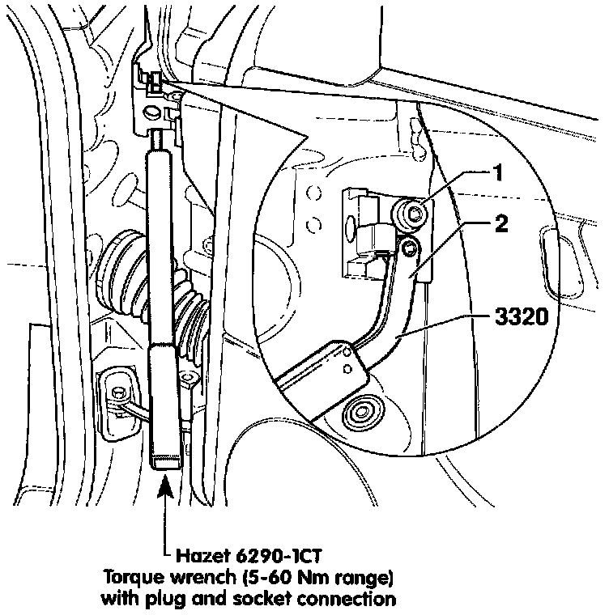

Front Door: Adjustments
Front Door Adjustment:To correct the door adjustment, the door hinges at the door pillar must be loosened.
CAUTION: Do not attempt to adjust the door by bending upward. This will damage the door and cause it to sag.
Door Adjusting Wrench:

For loosening bolts on door hinge at A-pillar (used with Hazet 6290-1CT torque wrench with plug and socket)
1- Bit insert (reposition for left or right side)
2- Set screw
3- Door adjusting wrench 3320
Position bit insert -1- for right or left doors and secure with set screw -2-.
Adjusting:

- Open door and loosen bolts -1- (Torx T45) on upper or lower hinges using 3320 door adjusting wrench (-2-).
- Adjust door (with help from second technician) as necessary.
- Move door within oversize holes to adjust
- Tighten bolts to 34 Nm (25 ft lb)
- Check adjustment and repeat if necessary.
NOTE: 3320 door adjusting wrench (-2-) also requires torque wrench with plug and socket connection Hazet 6290-1CT (arrow).
- After correcting door adjustment, carry out corrosion protection measures and touch up paint in hinge area as necessary.